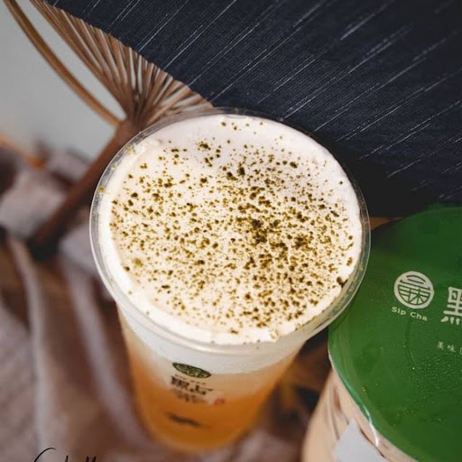
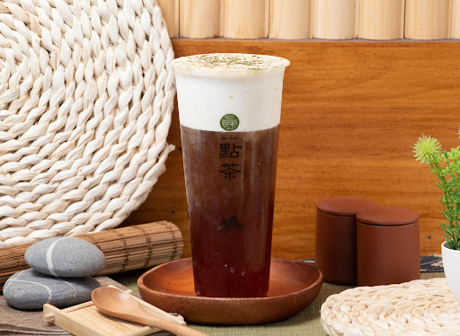
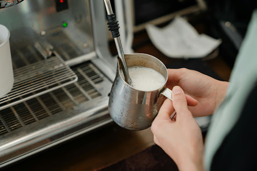

Specialty Series
冰霜奶蓋
冰霜奶蓋
系列
在茶香的深處，覆蓋一層如初雪般的濃厚奶霜。選用澳洲乳酪與進口鮮乳，職人每日現打 15 分鐘，呈現綿密如雲朵的質地，完美平衡茶韻的清冽與乳香的醇厚。
Discover the Craft

eco
Signature Choice
冰霜．炭焙烏龍
炭焙烏龍獨有的焙火香氣，搭配綿密香醇的海鹽奶蓋，入口濃郁滑順，隨後散發深厚茶韻與淡雅回甘。

filter_vintage
冰霜．初見綠茶
清新綠茶搭配鹹甜交織的海鹽奶蓋，茶香清雅、口感輕盈，每一口都散發清爽回甘的魅力。
NT$ 60
local_florist
夏季熱銷推薦
冰霜．赤鐵觀音
焙火鐵觀音融合濃郁海鹽奶蓋，茶香深沉厚實，奶香綿密滑順，展現成熟且迷人的風味層次。
NT$ 60

匠心工藝：每日現打奶霜
我們堅持不使用奶蓋粉，全程採用低溫鮮乳與優質乳酪，確保每一口都是最純粹的乳香體驗。
HOW TO ENJOY
飲用指南
三種層次，體驗冰霜奶蓋的極致風味
01
品嚐奶蓋
不使用吸管，傾斜 45 度角直接品嚐最上層的綿密奶霜，感受微鹹的濃厚乳香。
02
慢品茶韻
稍微仰頭，讓茶湯穿透奶霜入口，體會清冽茶香與乳香在口中交織的瞬間。
03
攪拌融合
品飲過半後，可將奶霜與茶湯輕輕攪拌，化身為一杯如絲般順滑的特製奶茶。